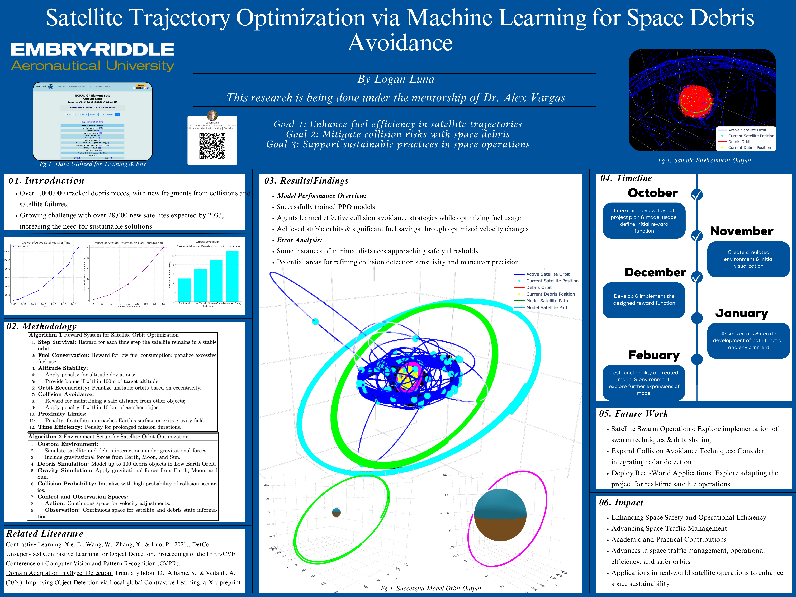
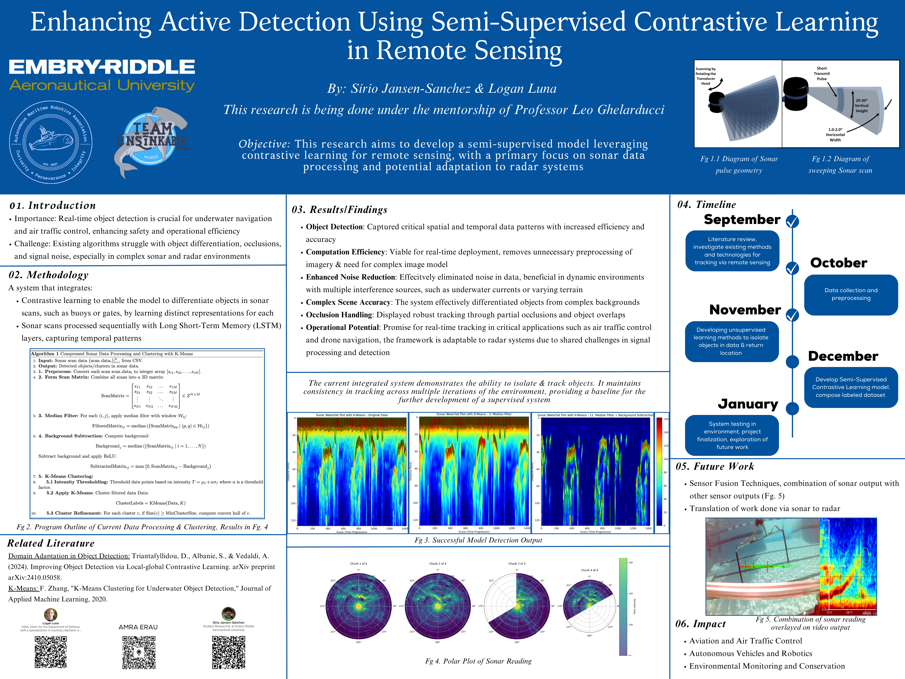

- M.S. Computer Science, Georgia Institute of Technology
- B.S. Computer Science, Embry-Riddle Aeronautical University (Honors)
- DoW SMART Scholar
Research Interests
AI for Mathematical Reasoning (AI4Math). My central question is how semantically informative training signals can be quantified and incorporated into the training and generation of mathematical reasoning models. Symbolic feedback rewards output that compiles or type-checks, which does not certify that it expresses the intended mathematics. Current directions:
- Extending reinforcement learning from symbolic feedback with semantic alignment as the training objective, measured by pass@k at large k.
- Dense rewards from distance in a learned proof-semantic space, grounded in kernel-checked entailment.
- Diffusion language models as a generative substrate for theorem proving and auto-formalization.
Earlier work: reinforcement learning for safety-critical systems (satellite collision avoidance, intrusion detection, sim-to-real drone control), signal-centric remote sensing, FAIR scientific workflows, and computer vision for autonomous vehicles.
Research Groups
-
Reasoning and Learning Group, Georgia Institute of Technology (2025–Present).
AI4Math / auto-formalization research under Dr. Vijay Ganesh. Contribute to AIProver (under review, ICLR 2027): built the multi-turn GRPO pipeline and graded reward ladder, the BEq+ extension, the distillation pipeline and dataset (16,570 Mathlib and 6,799 Mizar examples), and the Semantic Alignment Model. Developing reinforcement learning from semantic equivalence feedback and diffusion language models for AI4Math. -
Agile Research Group, Embry-Riddle Aeronautical University (2024–2026).
Satellite trajectory optimization research under Dr. Omar Ochoa; developed a PPO-based RL framework for fuel-aware satellite collision avoidance (97.5% avoidance success, IEEE Access 2026) and the SensorWF workflow framework (IEEE eScience 2026).
Research Posters
Below is a selected collection of research posters from 2022–2026, representing my work across reinforcement learning, optimization, sonar processing, remote sensing, sim-to-real robotics, and aviation NLP.
AERO-Sim2Real: Reinforcement Learning For Sim-to-Real Drone Deployment (2026)
Trains PPO-based flight-control policies in NVIDIA IsaacLab and deploys them on Crazyflie 2.1 nano-quadrotors, quantifying sim-to-real divergence across hover, waypoint-following, and figure-eight trajectory tasks.

Learning Causal Structures from Aviation Accident Narratives (2025)
Compares rule-based NLP, transformer (DistilBERT), and few-shot LLM (Mistral-7B) approaches for extracting causal relationships from NTSB aviation accident narratives and representing them as knowledge graphs.

Satellite Proposal Poster (2025)
This poster introduces the proposes a development framework for satellite anomaly detection. It outlines the motivation, mission impact, and design plan prior to full implementation.
Satellite Trajectory Research Poster (2024)
Displays the full research results for PPO-based orbital collision avoidance, including stabilized low-fuel orbits and debris-avoidance maneuvers. This poster was presented as the research matured into publishable form.

Hierarchical Dueling Q-Learning for Intrusion Detection (2024)
This poster outlines a two-agent Q-learning and Dueling DQN system for classifying and responding to cyberattacks. It demonstrates near-perfect binary and multi-class accuracy on large intrusion datasets.

Sonar Contrastive Learning Research (2024)
Presents a semi-supervised contrastive learning model for sonar-based object detection. Highlights both noise reduction strategies and adaptation potential for radar systems.

Autonomous Maritime Robotics Association Poster (2023)
This poster shows early work on underwater sonar-based detection, noise filtering strategies, and object tracking. It represents the foundation of later remote-sensing and sonar research.

Aircraft Detection & Kalman Tracking Poster (2023)
One of my earliest research posters, combining YOLO object detection with ORB keypoints and Kalman filtering for aircraft motion prediction. Demonstrates reliable tracking through occlusions and movement noise. Presented at NCUR 2023; 1st Place at the Embry-Riddle Student Research Symposium.